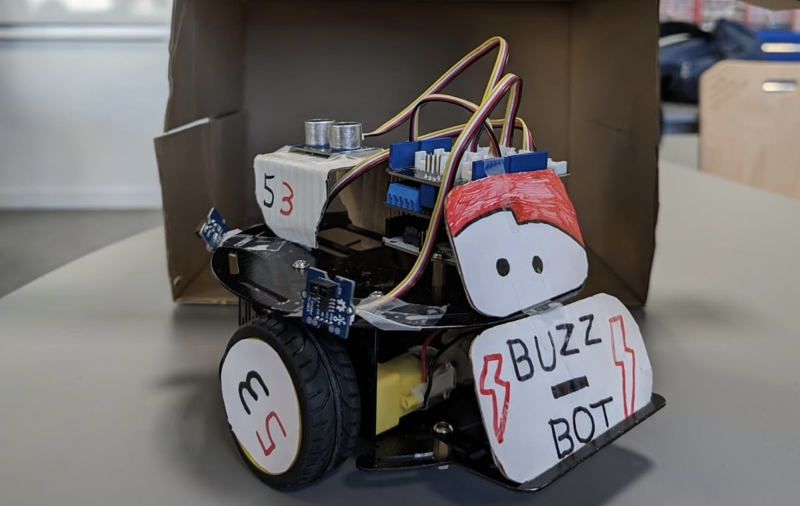
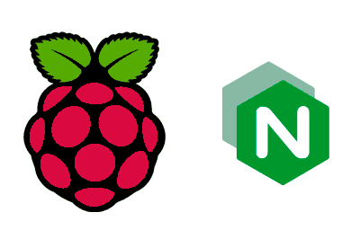

BuzzBot
Programmation d'un robot pour qu'il soit contrôlable afin de suivre un chemin aléatoire et arriver dans sa station.
01 — À propos
Bonjour ! Je suis Matéo Michel-Raballand, étudiant en informatique actuellement en 3ème année de BUT Informatique à Niort Tech.
Très intéressé par le développement et les nouvelles technologies, je me spécialise dans le développement DIA avec une forte appétence pour la création d'applications web modernes et performantes.
Actuellement à la recherche d'une alternance pour mettre en pratique mes compétences et continuer à apprendre au sein d'une équipe professionnelle, je suis motivé par les projets innovants et les défis techniques qui me permettent de progresser dans mon domaine.
02 — Parcours
Formations & diplômes
IUT La Rochelle à Niort Tech
IUT La Rochelle à Niort Tech
IUT La Rochelle
Lycée Saint François d'Assise
Option SIN (Systèmes d'Information et Numérique) · BIMD (Brevet d'Initiation aux Métiers du Drone) · TOEIC niveau B2.
Expériences professionnelles
Ce job d'été m'a permis de découvrir la culture d'entreprise et de travailler en équipe dans une structure plus grande que mes précédentes expériences.
03 — Compétences
04 — Projets

Programmation d'un robot pour qu'il soit contrôlable afin de suivre un chemin aléatoire et arriver dans sa station.

Création d'un serveur web hébergé sur une carte Raspberry Pi. Mise en place de la sécurité et gestion des utilisateurs.
Création d'un jeu qui mélange l'univers de Star Wars et la façon de jouer de Frogger.
Création d'une base de données pour stocker et gérer les données du port de La Rochelle.
05 — Contact
Je recherche actuellement une alternance pour mettre en pratique mes compétences. N'hésitez pas à me contacter, je réponds rapidement.
mateomr2006@gmail.com ↗